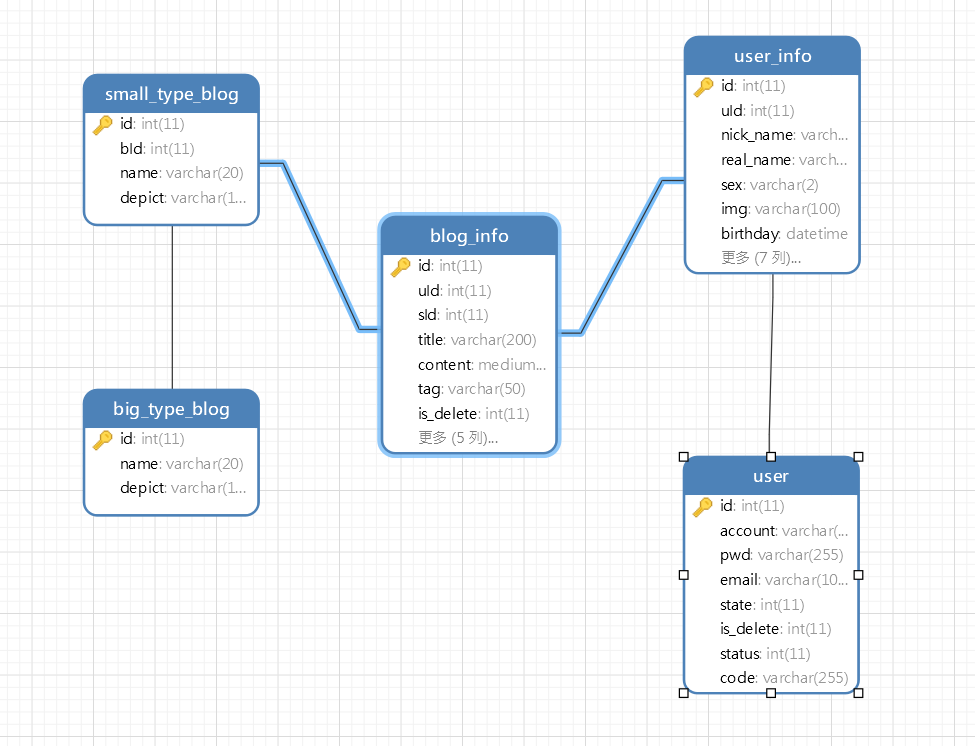
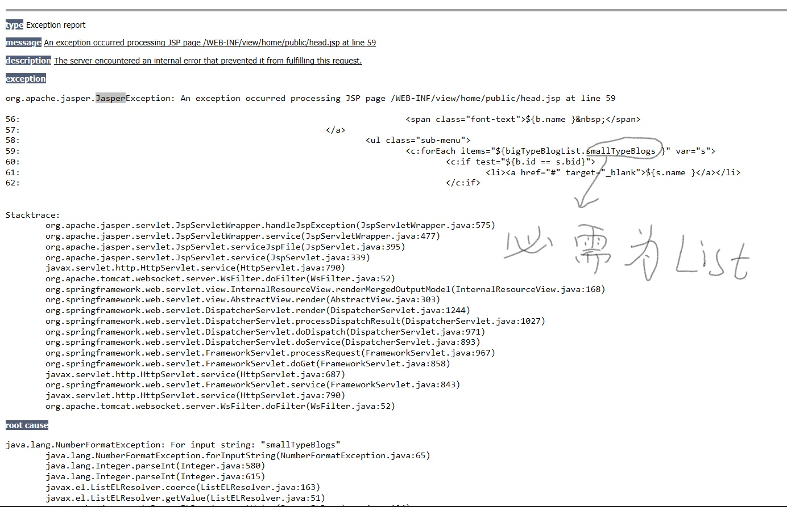
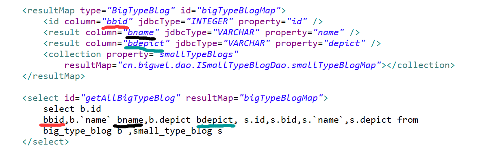

Blog开发文档
- 项目目的及整体构思
- 熟练掌握SSM框架
- 了解LayUI前台框架
- 体验项目开发从无到有的过程，即从前台页面到数据库设计到后台逻辑代码实现，线下到线上的运营
- 通过Maven管理和构建项目，开发工具为Eclipse， 数据库使用MySQL5.7.20，
服务器为Tomcat7.0.68 JDK 1.8
- 线上使用腾讯云服务器1G 2核 项目运行环境与本地开发环境保持一致
- 预计开发周期为一个月 由于之前并没有了解过SSM框架 只能边学边做 故开发周期较长
- 第一周：
-
- 2018.4.1:
- 扒GitHub开源项目网站静态资源
- 手写SQL语句，业务不多，故最初表设计较为简单 以后再慢慢添加功能 附数据库ER图：

-
- 2018.4.2:
-
2018.4.2 0:54 今天是极其漫长的一天，也是过得最快的一天 早上9点多打开电脑一直到现在没停过
开始这个项目之前我觉得有了SSH框架的基础 转SSM应该不难 但是问题不断出现 相比于SSH框架，SSM代码量
少 但是配置文件多， 提醒各位编程人员 不要过分依赖搜索引擎寻找资源，尽可能的通过官方文档获取信息
虽然大部分帮助文档都是英文的，但是信息更新及时。而CSDN或者是其他平台的资源 有很大的时效性
并且且别人开发工具，版本 或者是项目构建工具与你本地有很大
区别 这会造成同一行代码在他那可行但在你这却跑不起来，而这种错误我本人是很厌烦的
-
- 2018.4.5:
-
2018.4.5 2:25 昨天学了MyBatis一对多 多对一的ORM 提容易犯错误的几个点
-
(a).前台用c:forEach迭代标签处理后台传过来的List集合时，若需要在迭代标签中继续迭代
那么当你使用EL表达式获取对象属性 那个属性一定得是List对象 才可以作为的items
否则会报下图所示异常：

(b).如果你需要在某个*mapper.xml文件调用的另一个 *mapper.xml时 被调用的*mapper.xml返回类型一定得设置为 resultMap 而不能使用resultType
虽然resultType可以很方便的简写为实体类名 因为当你有一对多关系是 collection property="smallTypeBlogs"
resultMap="cn.bigwel.dao.ISmallTypeBlogDao.smallTypeBlogMap">/collection collection只有 resultMap属性
(c).按MyBatis官方文档 ，*mapper.xml文件的开头 mapper namespace="cn.bigwel.dao.ISmallTypeBlogDao" 命名空间一定是其Dao接口的完全限定名
Dao接口CRUD操作的方法名 一定为 *mapper.xml 各增删改查标签的ID名 可以把*mapper.xml看做为Dao的实现类
(d).一定要注意 *mapper.xml文件里面的配置result标签的column属性 ,这个值并不是数据库中表的字段名，而是通过SQL语句查询出来的结果集名，当多表查询是，该结果集名可能会重名
那么此时需给查询字段取别名 如：

- 2018.4.8 2:55
-
项目现在大体结构已经OK，接下来一周的工作重心放在数据的采集上面。